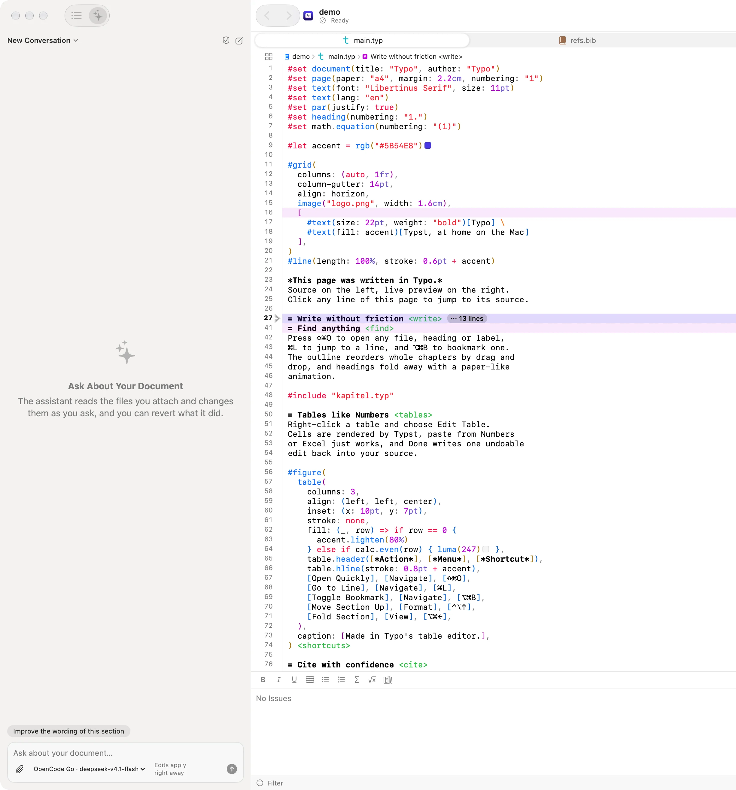
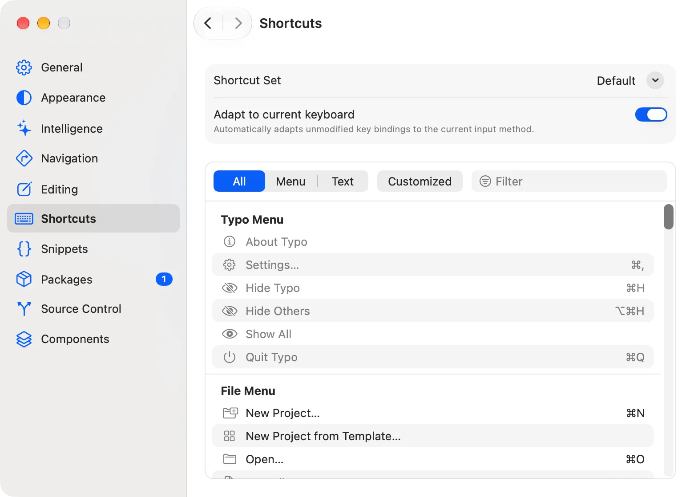

Typo für macOS
Typst, zu Hause
auf dem Mac.
Ein nativer Typst-Editor in Swift und SwiftUI, mit dem echten Typst-Compiler unter der Haube. Leicht und nativ, kein Electron: 40 MB Download für Paper, Abschlussarbeiten und Folien, in einer App, die sich anfühlt, als wäre sie mit deinem Mac gekommen.

Der Editor
Alles, was du von einer echten IDE erwartest. Für deine Texte.
-
Autovervollständigung, die dein Dokument kennt
Kontextbewusste Vorschläge direkt aus der Typst-Engine: Variablen, Funktionen aus Imports, Built-ins und nur die Labels und Bib-Keys, die du an der Stelle wirklich erreichst.
-
Live-Vorschau mit Klick zur Quelle
Klick irgendwo in die Vorschau und du landest in der Zeile, aus der es stammt. Zoom, Doppelseiten, Seitenminiaturen und dunkle Seiten inklusive.
-
Rechtschreibprüfung, die
langliestPrüft in der Sprache aus
#set text(lang:)und lässt deine Formeln in Ruhe. -
Multi-Cursor und Vim-Modus
Bearbeite viele Stellen auf einmal oder bleib bei deinem Muskelgedächtnis: mit Vim-Modus und einer Modus-Kapsel wie in Xcode.
-
Farben, die du siehst
Farbfelder stehen direkt neben
rgb(…). Ein Klick öffnet den Farbwähler mit Schiebereglern und Wertefeldern für jeden Kanal, auf Wunsch mit Farbrad. -
Export für den Druck und für alle
PDF, archivtaugliches PDF/A, barrierefreies PDF/UA-1, PNG und SVG, die Seiten wählst du wie im Druckdialog. Drucke über File › Print… oder nimm das ganze Projekt als ZIP mit. Präsentiere im Vollbild mit Referentenansicht. Fehlt eine Schrift, gibt es eine Warnung samt Schnellkorrektur.
-
Moderatornotizen wie in Keynote
Füge jeder Folie per Kontextmenü oder Tastenkürzel eine Notiz hinzu und schreib sie in einem kleinen Editor direkt im Quelltext. Die Notizen der sichtbaren Folie stehen unter der Vorschau, auch die aus Touying und Polylux, und ein Klick entwirft sie mit KI.
-
Alles finden
Mit „Schnell öffnen“ (⇧⌘O) findest du Dateien, Überschriften und Labels. „Gehe zu Zeile“ mit ⌘L. Suchen und Ersetzen im ganzen Projekt, auch mit regulären Ausdrücken.
-
Code-Intelligenz für Typst
Zur Definition springen, Referenzen finden, Symbol umbenennen, Doku beim Überfahren, Signaturhilfe und Schnellkorrekturen.
-
Dein Arbeitsplatz, wie du ihn willst
Geteilter Editor, Fokusmodus, Minimap und Sticky Headings. Navigatoren für Gliederung, Probleme, Lesezeichen und Änderungen.
-
Projekte mit Verlauf
Starte mit einer Vorlagengalerie. Schnappschüsse und Verlauf pro Datei, dazu eine Git-Randleiste mit Blame, ein Log und ein Änderungen-Navigator.
-
Bilder, die einfach landen
Zieh ein Bild hinein oder füg es ein, und es wird zur Abbildung.
-
Typo aktualisiert sich selbst
Neue Versionen kommen automatisch, du musst keinen Download suchen.
Außerdem an Bord: Regenbogenklammern, Inlay Hints, Snippets, Formatierung mit typstyle und ein Wortzähler, der nur deine Wörter zählt.
Tabelleneditor
Tabellen wie in Numbers.
Öffne jedes table(…) oder grid(…) in einem visuellen Raster. Jede Zelle setzt Typst selbst, mit deinen Formeln, deinen Referenzen und deinen #set-Regeln.

- Pfeiltasten, Tab, Return, Kopieren und Einfügen wie in einer Tabellenkalkulation
- Direkt aus Numbers oder Excel einfügen, die Tabelle wächst mit
- Zellen verbinden, Zeilen und Spalten verschieben, Breiten anpassen
- Stile: Plain, Grid, Header Line, Booktabs, Striped
- Ein einziger Undo-Schritt, sobald du auf Done klickst
Table Intelligence
Sortieren, summieren, transponieren. Frag einfach.
Beschreib eine Änderung in deinen eigenen Worten oder tipp auf einen Vorschlag: sortieren, Summenzeile anfügen, transponieren, leere Zellen füllen, übersetzen, Groß- und Kleinschreibung korrigieren, Zahlen formatieren. Das Ergebnis landet als ein einziger Undo-Schritt, mit Zusammenfassung.

Lieber dunkel?
Kein Problem.
Falten
Falte alles. Und sieh zu.
Klapp Überschriften, Abbildungen, Tabellen, Formeln, Codeblöcke, Kommentare und Listen ein. Die Animation folgt dem Ansatz von Xcode: ein Papierfalt-Snapshot, während der Text darunter in jedem Frame neu umbricht, mit bis zu 120 Hz. Verschieb Abschnitte nach oben und unten oder zieh sie in der Gliederung, auch in eine andere Datei.
Probier’s aus: Klick auf das Band neben den Zeilennummern.
Assistent, optional
Ein Assistent, der erst fragt.
Lass ihn lokal mit Apple Intelligence laufen oder bring deinen eigenen Key für OpenRouter, OpenCode und andere OpenAI- oder Anthropic-kompatible Anbieter mit.
Tipp / für Workflows. /check kompiliert und schaut sich jede Seite an, /submit ist eine Checkliste vor der Abgabe, /consistency sorgt für eine Schreibweise pro Begriff. Schreib eigene. Sie laufen mit jedem Modell.
- Nichts wird gesendet, bevor du einem Anbieter zustimmst
- API-Keys liegen ausschließlich in deinem Schlüsselbund
- Du bestimmst, was er darf: Dateien bearbeiten, das Projekt lesen, die Vorschau ansehen
- Änderungen greifen sofort, mit Inline-Diff und einer Leiste zum Zurücksetzen

Literatur und Pakete
Zitieren ohne geschweifte Klammern.
Bearbeite .bib-Dateien in einem richtigen Formular, mit Prüfung der Pflichtfelder. Füg ein Zitat mit ⇧⌘C ein. Stöbere im Typst Universe, verwalte lokale Pakete und arbeite offline mit einem zwischengespeicherten Paketindex.
„Add Reference“ schlägt eine DOI, arXiv-ID oder ISBN nach. Die Zotero-Synchronisierung füllt eine .bib aus deiner Zotero-Bibliothek und hält sie aktuell.

Ganz nach deinem Geschmack
Einstellungen wie in Xcode. So, wie es sich gehört.
Themes, Schriften, Cursor-Stile, hell oder dunkel. Shortcut-Sets, die du duplizieren und umbenennen kannst, Filter für Konflikte und neue Tastenkürzel per Doppelklick aufnehmen. Exportier deine Einstellungen und nimm sie mit.

Schreib etwas Schönes.
Typo ist kostenlos, und der Quellcode ist offen. Hol es dir, schau rein und sag uns, was deinem Workflow noch fehlt.